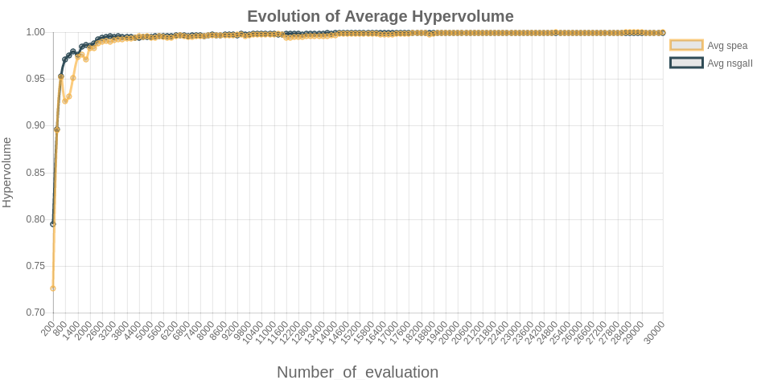

Obtención de los datos y retorno del gráfico
Para crear el gráfico, no basta sólo con generar un color y las etiquetas pertinentes de los ejes de coordenadas, para poder generar el gráfico y retornarlo al lado cliente, hay que realizar una serie de tareas. El orden para la generación del gráfico es el siguiente:
- Crear la clase del gráfico
- Crear un método get_datasets
- Crear un método get_labels
Una vez se realiza estas tres operaciones, es necesario retornar el objeto creado con la siguiente estructura:
from jchart import Chart
from jchart.config import Axes, DataSet, rgba
class BarChart(Chart):
chart_type = 'bar'
def get_labels(self, **kwargs):
return ["January", "February", "March", "April",
"May", "June", "July"]
def get_datasets(self, **kwargs):
data = [10, 15, 29, 30, 5, 10, 22]
colors = [
rgba(255, 99, 132, 0.2),
rgba(54, 162, 235, 0.2),
rgba(255, 206, 86, 0.2),
rgba(75, 192, 192, 0.2),
rgba(153, 102, 255, 0.2),
rgba(255, 159, 64, 0.2)
]
return [DataSet(label='Bar Chart',
data=data,
borderWidth=1,
backgroundColor=colors,
borderColor=colors)]
Retorno de datos en MetAnalyze
Para la generación de los gráficos en MetAnalyze ha sido necesario realizar algunos cambios en la generación de los gráficos:
class MinChart(Chart):
getConfiguration = Configuration.objects.filter().latest('id')
chart_type = 'line'
scales = {
'yAxes': [{'scaleLabel':{'display':True,'labelString':'Hypervolume','fontSize':int(15)}}],
'xAxes' : [{'scaleLabel':{'display':True,'labelString':str(getConfiguration.evaluation),'fontSize':int(20)}}]
}
title = {
'display': True,
'text': 'Evolution of Minimum Hypervolume',
'fontSize': 20,
}
legend = {
'display': True,
'position': 'right'
}
responsive = True
def get_datasets(self,*args):
getConfiguration = Configuration.objects.filter().latest('id')
algorithm_names = []
getAlgorithms = Algorithms.objects.filter(configuration__id=getConfiguration.id).values().distinct()
for i in range(int(getConfiguration.nAlgorithms)):
algorithm_names.append(getAlgorithms[i]['algorithm'])
dataModel = MinChartModel.objects.filter().latest('id')
data = dataModel.listValues
chartReturned = []
data_scatter = dataset(data)
borderColor = []
for i,v in enumerate(data_scatter):
borderColor.append(colors.colors())
for i,v in enumerate(data_scatter):
chartReturned.append(DataSet(type='line',label='Min '+str(algorithm_names[i]),showLine=True,data=v,
borderColor=borderColor[i],fill=False))
return chartReturned
def get_labels(self,*args, **kwargs):
dataModel = MinChartModel.objects.filter().latest('id')
data = dataModel.listValues
labelsChart=labels(data)
return labelsChart
Debido a que los datos que se reciben no son estáticos es decir, no siempre se recibirán a comparar 2 algoritmos, ni 3 sino que pueden ser 2,3 ó 4, fue necesario realizar una serie de cambios para la generación de diferentes colores y la obtención de las etiquetas. Además, debido a que el nombre de los algoritmos tampoco será el mismo, fue necesario realizar cambios a la hora de retornar el gráfico generado.
Renderización de los gráficos
Para renderizar los gráficos, hay que realizar una configuración tanto en el lado servidor como en lado cliente.
Configuración en el lado servidor
Para retornar los gráficos desde el lado servidor, hay que importar los diferentes gráficos que se han creado:
from charts import MinChart,AvgChart,MaxChart,MinAvgMaxChart
Una vez importados los diferentes gráficos creados, se debe retornar cada componente como un diccionario
dicOutput = {}
dicOutput['minavgmax_chart'] = MinAvgMaxChart
return render(request, 'app/results.html',dicOutput)
Configuración en el lado cliente
Como el gráfico generado se recibe como un objeto canvas, es necesario añadir en la plantilla HTML la posibilidad de recibir este tipo de objeto.
<div class="row" >
<div class="col s12">
<br/>{{min_chart.as_html}}
</div>
</div>
<button class="btn waves-effect waves-light indigo darken-3" type="button" name="action" id="saveMinChart-btn">
<i class="material-icons right">send</i>Save Minimum Bound Chart
</button><br/>
Resultados obtenidos del experimento
